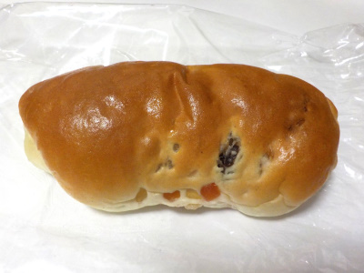
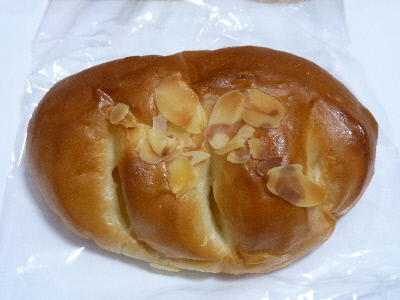
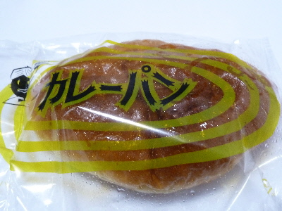
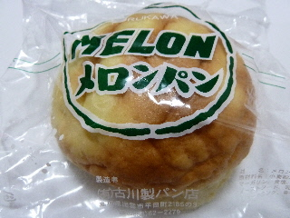
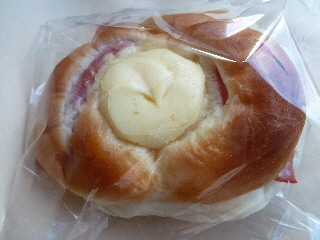
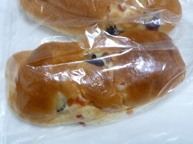

古川製パンのフルーツミックス
2023/09/08

フワフワのコッペパンに甘いドライフルーツの粒が入ってました。
噛んだら潰れちゃうくらい柔らかいパンの食感が面白かったです。
島根県出雲市平田町寺町2185-9
2023/09/08

フワフワのコッペパンに甘いドライフルーツの粒が入ってました。
噛んだら潰れちゃうくらい柔らかいパンの食感が面白かったです。
2017/02/25
さつまいものクリームパンだったかな？名前を憶えていませんでした。

クリームがとっても美味しかったです。
いも餡のようなクリームのような、あんとクリームのいいところが合わさった感じがしました。
クリームがもっと沢山食べたい！って思いました。
近いうちにまた食べたいです。
2017/02/25
独特なパッケジがいいですね。

濃い色のパンですね。コゲたパン味がいい風味になっていて美味しかったです。
カレーは甘めでした。
私はスパイシーなものより甘いのが好きかな。
2013/04/29
カワイイパッケージですね。

このメロンパンは外のクッキーが少ないです。
でも中にはクリームがはいっていました。
ちょっと変わったメロンパンですね。
2012/11/03
マヨネーズがたっぷり乗ったパンを見つけました。

古川製パンのハムロールです。
ロールパンにハムがあって、その上にマヨネーズがドーンと乗っています。
マヨラーさんに丁度いいかも？

これはドライフルーツが色々入ったフルーツミックスです。
ドライフルーツがとっても甘くて美味しかったです。
メロンパンがおすすめかな。